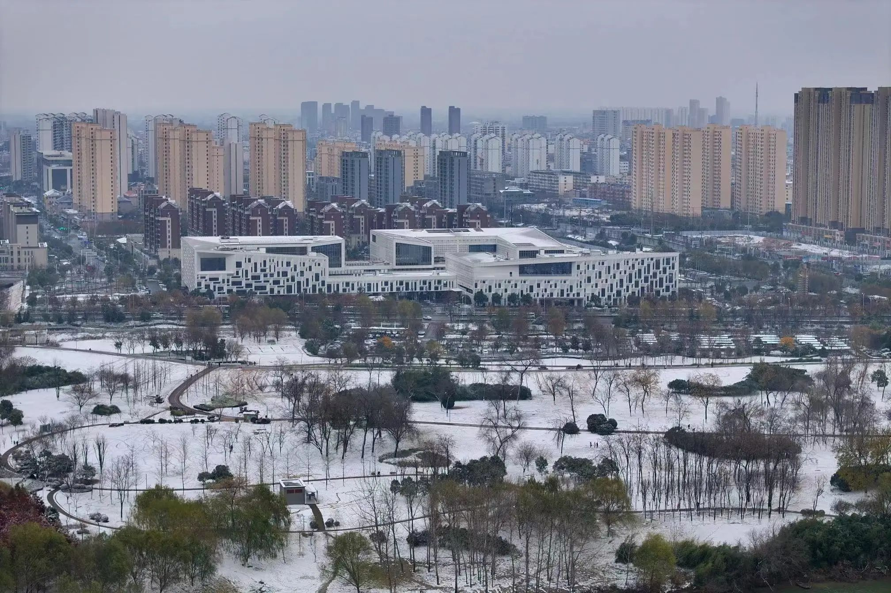
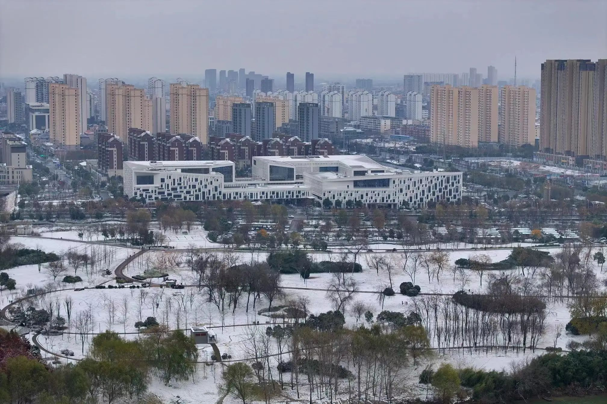
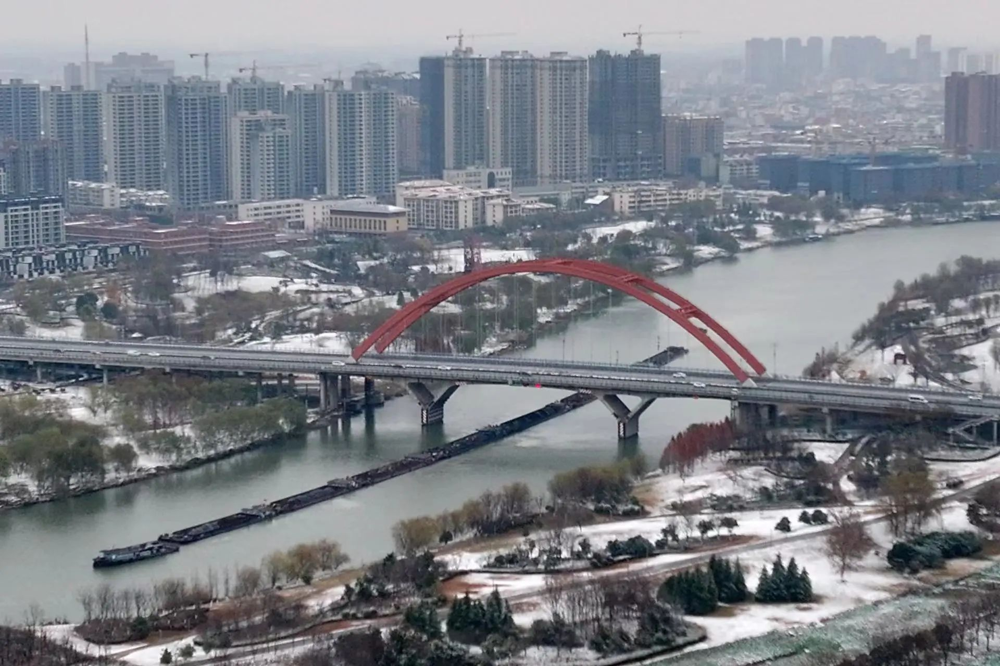
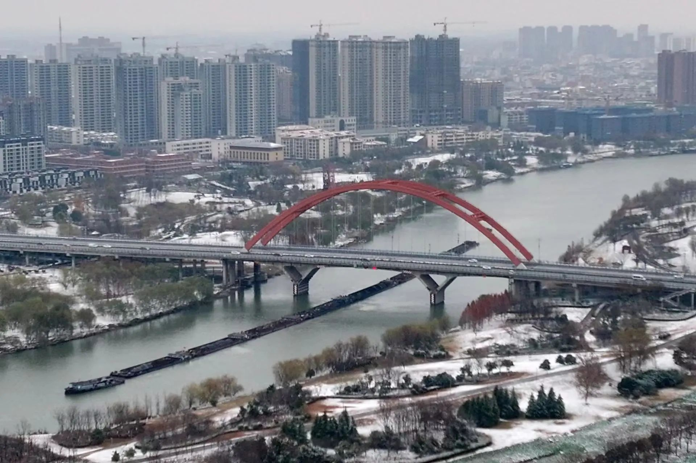

太和

太和县，隶属于安徽省阜阳市，古名鹿上、邢丘、廪丘。位于阜阳市北部，地处黄淮平原南端，位于阜阳市、亳州市之间，总面积1867平方千米。截至2022年10月，太和县下辖30个镇、1个乡，另设有1个开发区。截至2022年末，太和县常住人口136.9万人。
太和自秦朝置县，已有2000多年历史，元大德八年（1304年）改太和县，寓意太平祥和。境内有七处故城遗址、楚都古钜阳、五处古文化遗址和元代文庙建筑群等古建筑，历史名人有汉章帝师张酺（pú）、东汉清诏使范滂（pāng）、清朝两广总督徐广缙等。太和县是中国书画艺术之乡、中国民间文化艺术之乡、中国粮食生产先进县、中国绿化模范县、中国医药集散中心、中国最大的发制品原料、桔梗生产加工基地。
2022年，太和县实现地区生产总值（GDP）533.6亿元，其中，第一产业增加值65.5亿元，第二产业增加值218.5亿元，第三产业增加值249.6亿元。三次产业结构为12.3：40.9：46.8。人均地区生产总值（按常住人口计算）38978元。
太和景色
 

 
